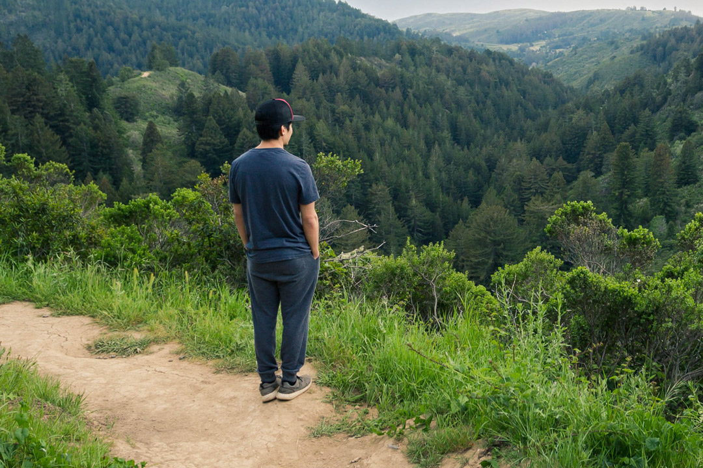

About

Bryant Fukushima was born and raised in Hawai'i on the Island of O'ahu. Bryant loves Nature and all that it has to offer. He takes full advantage of the outdoor lifestyle by surfing, camping, hiking, and much more. To put it more simply, Bryant loves being active outdoors in Nature.
Bryant Fukushima is a Graphic Designer currently living in San Francisco. He aspires to become a Web Developer to strengthen his ability to create well designed and efficient projects. Along side persuing Web Development, Bryant is the co-founder of the company PURE Certified.